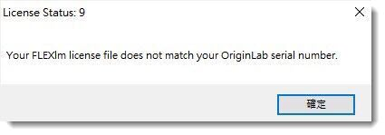

FAQ-1119 Ich erhalte die Fehlermeldung "Ihre FLEXlm-Lizenzdatei passt nicht zu Ihrer OriginLab-Seriennummer". Was soll ich tun?
Server-Lic-Not-Match-SN
Letztes Update: 28.12.2021
Falls Sie die folgende Meldung sehen, wenn Sie versuchen, Ihr Origin mit dem Lizenzserver zu verbinden:
License Status: 9
Your FLEXlm license file does not match your OriginLab serial number.
- 
Bitte kontaktieren Sie Ihren Lizenzservermanager, um die korrekte Seriennummer und Lizenzserverinformation zu prüfen.
-
- Falls Sie Origin mit der falschen Seriennummer installiert haben, befolgen Sie bitte die Schritte auf dieser Seite, um sie zu korrigieren.
- Falls Ihre Seriennummer und Serverinformationen korrekt sind, die Meldung aber nach wie vor angezeigt wird, besteht womöglich ein Lizenzproblem auf Seite des Servers. Verweisen Sie den Servermanager bitte auf diese Seite, um das Problem zu beheben.
Schlüsselwörter:Seriennummer falsch, keine Verbindung zum Server, 3 Minuten, Lizenz läuft ab, Netzwerk, Concurrent-Lizenz, freie Lizenz